Perception & calibration: The point-cloud work deliberately did not copy the RS2 HoloAssist pipeline 1:1. The base project originally explored dense point clouds, but the resource cost pushed it toward AprilTag tracking for reliable real-time use. For HoloAssist-AI we kept a marker-free point-cloud route because centroid extraction is directly relevant to the AI pipeline, while the final hand-eye calibration still depended on an external calibration package, easy_handeye2. The tradeoff is accuracy and compute: tag tracking can be very precise if tag size and a high-resolution feed are available, while high-definition point clouds need cropping, filtering, clustering, and more memory bandwidth.
RL training evolution: The first PPO work ran in Gazebo Classic with a large 29D observation vector. The feedback we received was consistent: the observation space looked too large, some variables were probably redundant, and the robot motion was unstable. John then ported the environment to Ignition Fortress and reduced the observation space to roughly 15D. Ollie continued working on that reduced Gazebo setup, but it still was not producing the quality of behaviour we wanted, so John moved to MuJoCo and split the problem into staged sub-policies to reduce the learning load.
MuJoCo and Isaac Sim: The MuJoCo branch became more hardcoded by design: pan, locked-reach, and grasp-style sub-policies, with network sizes tuned from 64x64 to 128x128 and finally 256x256 for the final panlockedreach file. The pan policy stayed at 64x64 because it was effectively 1D. Sebastian trained Isaac Sim in parallel from an early PPO weighting and parameter direction; it did not directly consume MuJoCo weights, but it converged toward similar behaviour because the design intent was similar. Isaac Sim is becoming the stronger long-term path because 4096 parallel environments train far more efficiently while preserving more robot DOF.
Feedback-driven changes: Raphael's feedback pushed us to question PCA-style feature extraction and the practicality of teleoperation data at small scale. Pengshuo and Louis both flagged the observation vector size and redundancy problem. Louis also suggested learned pose models and trajectory-level actions, which would reduce low-level smoothness issues. Augustine's notes aligned with the PPO plus imitation-learning direction, but the robot movement quality showed that the control interface needed more work before imitation data could solve the problem.
What we would do differently: We would define the observation/action contract earlier and aggressively remove correlated state before training. We would also evaluate whether trajectory actions or MoveIt-style planning, like in the RS2 HoloAssist project, are better for parts of the task than raw PPO joint deltas. For perception, we would compare the lightweight DBSCAN approach against learned pose estimators such as MegaPose or FoundationPose, but only if the target hardware can afford the additional model cost.
Limitations: Full end-to-end pick-and-place was not demonstrated as one deployed policy. MuJoCo reduced the training difficulty but became more scripted and lower-DOF than Isaac Sim. Dense point clouds remain expensive, and tag tracking requires known tag size plus a sufficiently high-resolution feed. We all developed on different generations of high-end Dell XPS laptops, which means both HoloAssist projects are still difficult to deploy on lower-power field hardware without acceleration.
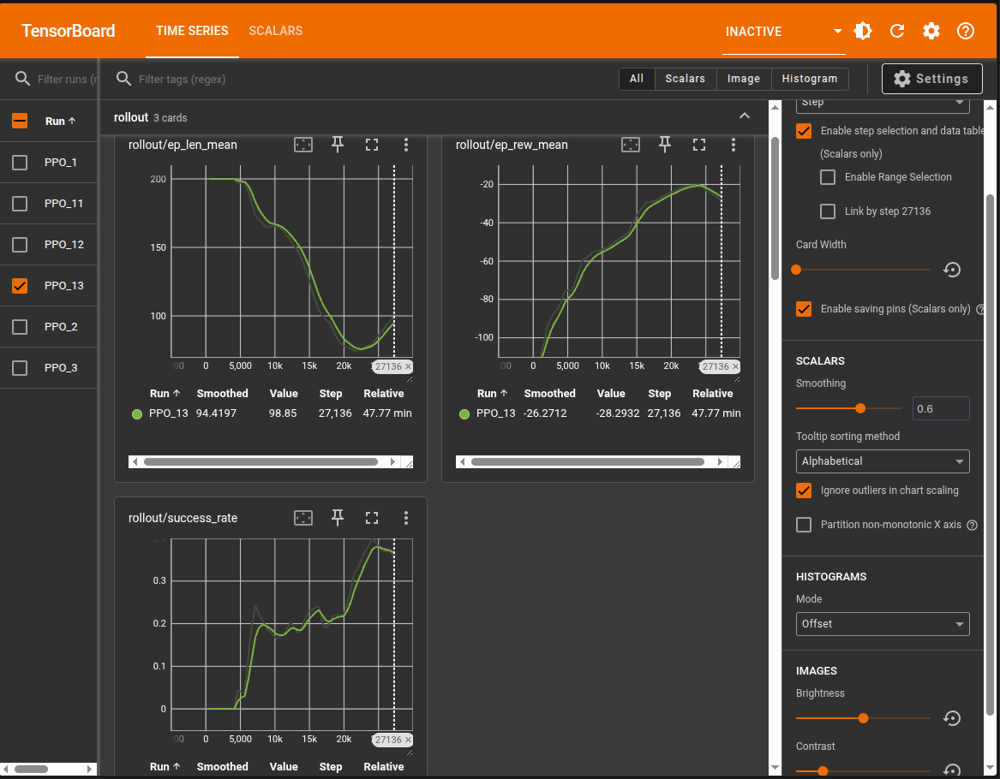
TensorBoard Placeholderscreenshots/tensorboard-gazebo-phasea.png
Gazebo Phase A PPO
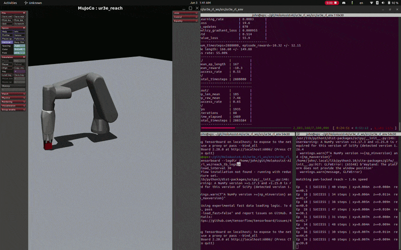
MuJoCo GIFscreenshots/mujoco-latereach.gif
MuJoCo Late Reach
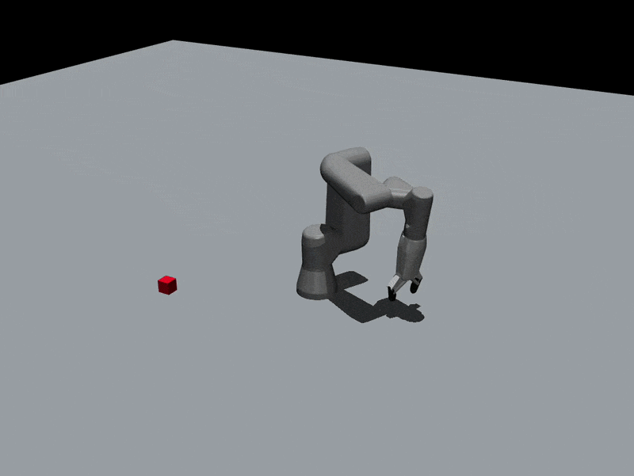
MuJoCo GIFscreenshots/mujoco-final-fullmodel.gif
MuJoCo Final Full Model
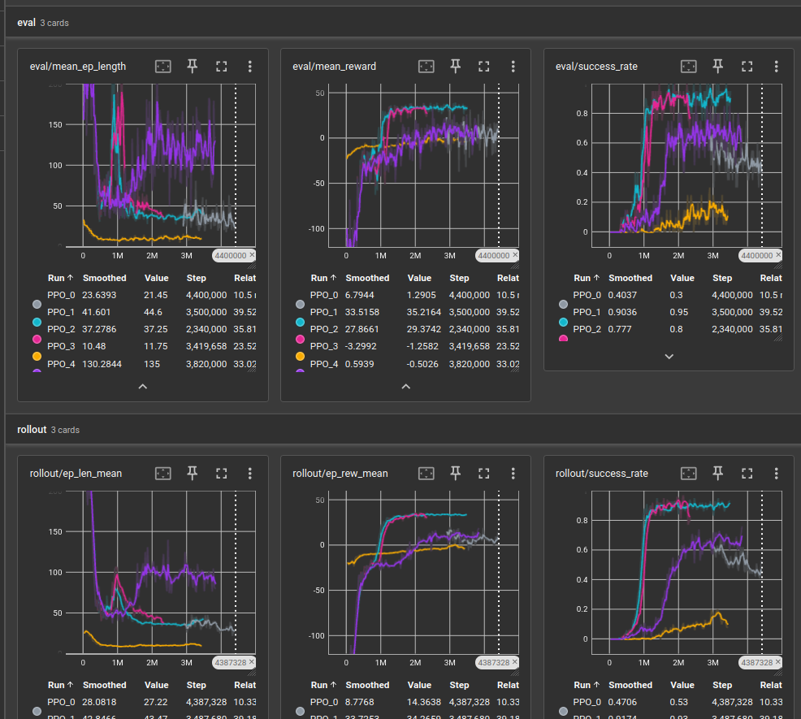
TensorBoard Placeholderscreenshots/mujoco-finaltensorboard.png
MuJoCo Final TensorBoard
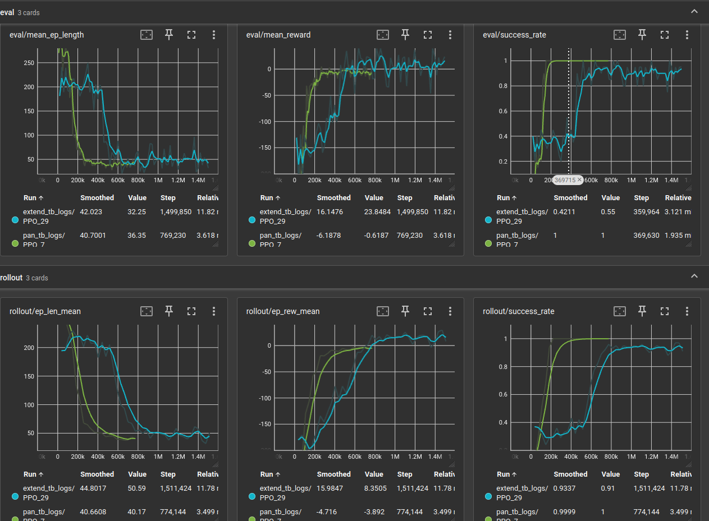
TensorBoard Placeholderscreenshots/tensorboard-mujoco-phaseb.png
MuJoCo Phase B
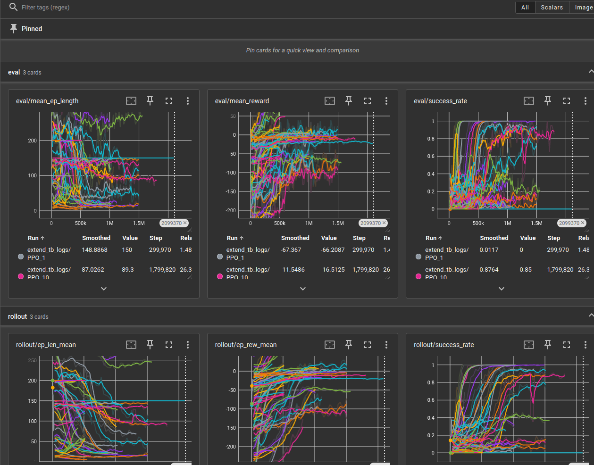
TensorBoard Placeholderscreenshots/tensorboard-mujoco-earlyPPO.png
MuJoCo Early PPO
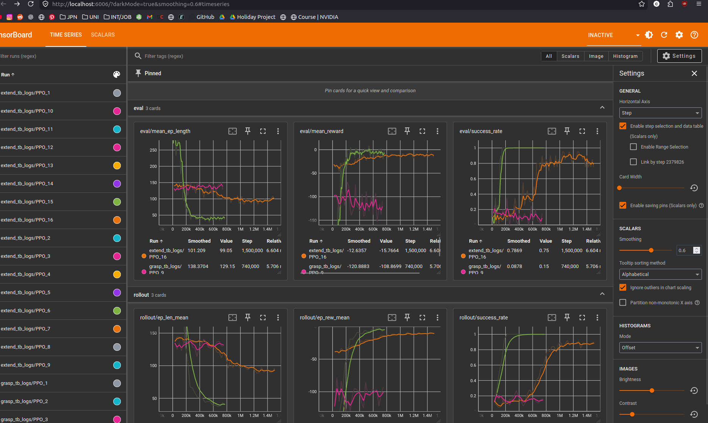
TensorBoard Placeholderscreenshots/tensorboard-mujoco-horrible-PPO.png
MuJoCo Failed PPO
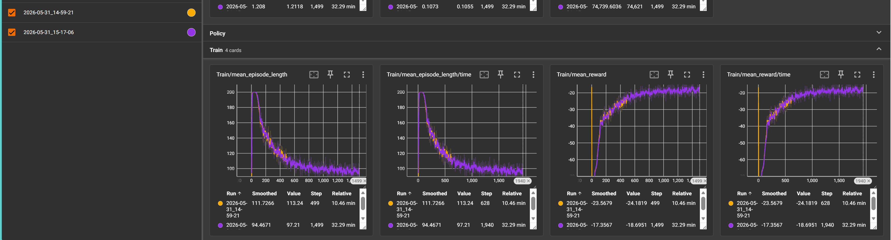
TensorBoard Placeholderscreenshots/tensorboard-isaacsim-earlyPPO.png
Isaac Sim Early PPO

Clustering GIFscreenshots/clustering.gif
DBSCAN Segmentation

Clustering GIFscreenshots/clusteringtest.gif
Clustering Test Run
Point Cloudscreenshots/rawpointcloudimage.png
Raw Point Cloud
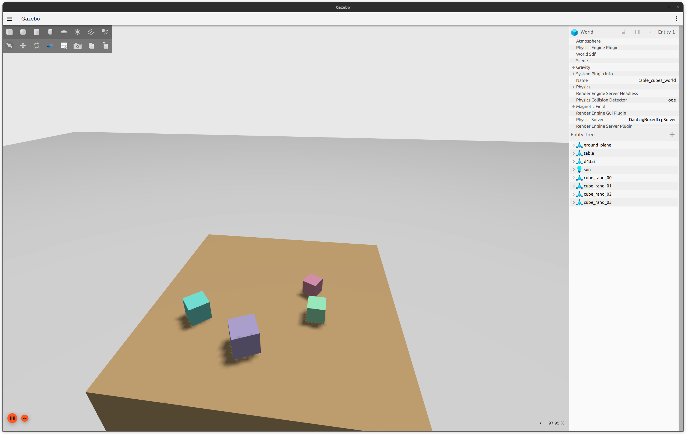
Perceptionscreenshots/perceptiongazebo.png
Gazebo Perception View
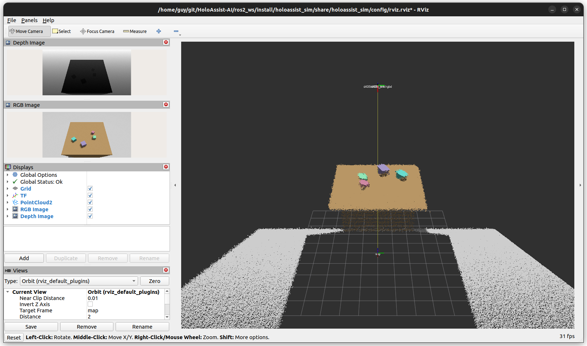
Perceptionscreenshots/perceptionrvizpointcloud.png
RViz Point Cloud
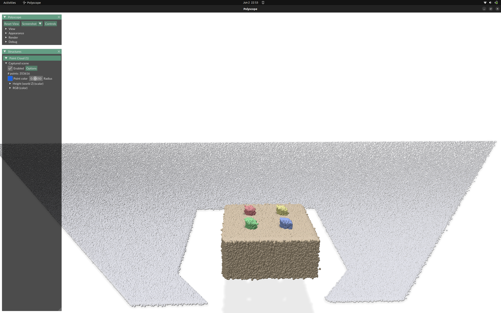
Perceptionscreenshots/perceptionpolyscope.png
Perception Polyscope

Calibrationscreenshots/calibration.png
easy_handeye2 Calibration